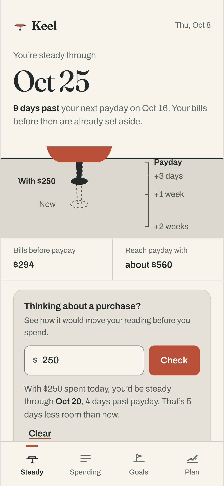
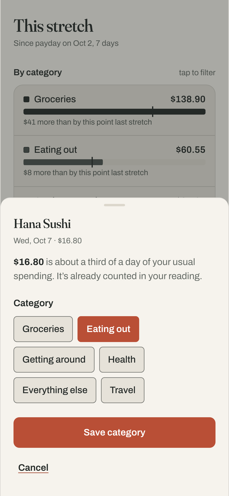

A UX and visual design case study for a money app built on steadiness, not restriction.
72%
So the person opening a finance app is already a little anxious. That’s the default user, not the edge case.
American Psychological Association, Stress in America: Paying With Our Health (2015). Survey of 3,068 adults, August 2014.
Researchers call it the ostrich effect: investors checked their portfolios more often in rising markets than in falling ones.
An app that greets a rough week with red numbers is teaching people to stop opening it.
Karlsson, Loewenstein & Seppi, The ostrich effect (2009); Sicherman, Loewenstein, Seppi & Utkus, Financial Attention (2016).
You’re steady through
Oct 25
9 days past your next payday. Bills before then are already set aside.
The headline is a date, not a balance: walk forward from today, subtract usual spending and bills, ignore future income.

Spending doesn’t break limits. It shifts weight.

When your reading changes, the keel eases to its new depth like a boat taking on weight, then stops. About 900ms, no bounce.
12 Lottie animations and 4 Rive state machines, all written in code, each with a dark version and a reduced-motion state.
Not tested with people yet. The research is a literature and competitor review, and the five-second and task tests are planned, not run. The case study says so.
Research, IA, wireframes, identity, motion system and a working app with real calculations. Links in the comments.
Should a money app ever show you red?
Shyine Makin · UX and visual design · Keel is a fictional concept.